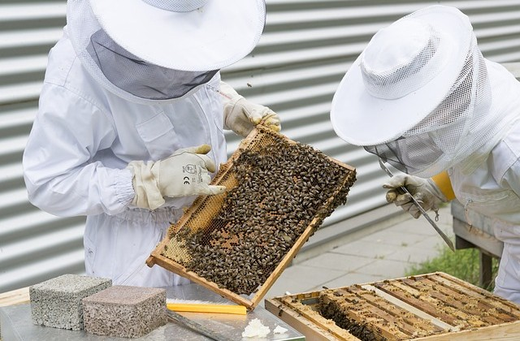
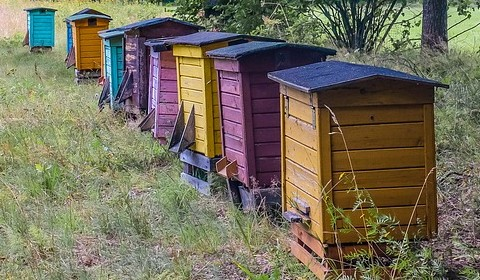

About Beemen
Beemen Honey has been farming honey for over 100 years. Over the course of that century, we have been perfecting our farming and beekeeping methods to maximize the quality of every jar of honey we sell.
About The Owner
The owner, John Beemen, is one of a great line of proud beekeepers. His family has owned there prized apiary for generations, and has been selling jars of honey and other honey-based products throughout that time.
Flowers
We provide our bees with some of the best flowers available for them to get the best nectar and pollen that they can collect.
Some of these flowers are the following: